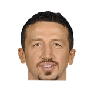

“I just heard about this trade 10 seconds ago. So, they got Kanter and … I guess I am happy [for Anthony] because I know he wanted to get out and be in a situation where he felt like what he was doing on the court was actually productive. It’s going to be wild to see that trio of guys together. It’s just crazy how the West is getting stronger and stronger. It should be another tough matchup when we play them.”
What NBA players and coaches have said about Enes Kanter Freedom
24 quotes about Enes Kanter Freedom from 22 players, coaches and executives, newest first. Each one links to its original source.
Best quotes
The Knicks are monitoring Lillard’s situation with hopes he’ll land on the trade block.
“You know one thing he doesn’t care about big markets, small markets,’’ Kanter said Monday on SiriusXM Radio. “He wants to win it all in Portland. I’m saying this every time I talk about him, but he’s definitely one of the most loyal and maybe the most loyal player in the league. People always talk about how good of a player he is, but he’s actually one of the best teammates that I’ve played with.”
On Enes Kanter not playing on the national team in 2012,Tanjevic said that
“He is a great talent and we miss him a lot. He decided not to join us but honestly, he needs us more than we need him. He has not played or trained with us in the past three years. I [also] had to replace [Kerem] Gonlum, who was on holiday with his family. Without Kanter, it will be a little more difficult but I think we’ll be able to get into EuroBasket 2013.”
Bogdan Tanjevic on Enes Kanter FreedomBall In Europe
What Enes Kanter Freedom has said about other players and coaches →
Quotes per season
Who talks about Enes Kanter Freedom most
 Gordon Hayward on Enes Kanter Freedom2 quotes
Gordon Hayward on Enes Kanter Freedom2 quotes Jeff Hornacek on Enes Kanter Freedom2 quotes
Jeff Hornacek on Enes Kanter Freedom2 quotes- Adam Silver1 quote
- Billy Donovan1 quote
- Bogdan Tanjevic1 quote
 Damian Lillard1 quote
Damian Lillard1 quote- David Fizdale1 quote
 Evan Turner1 quote
Evan Turner1 quote
Hedo Turkoglu1 quote- Ime Udoka1 quote
 LeBron James1 quote
LeBron James1 quote, Public domain, via Wikimedia Commons") Mark Tatum1 quote
Mark Tatum1 quote
Back and forth
2021-22
2 quotesLakers Nation:LeBron on Enes Kanter:
“He’s definitely not someone I’m gonna give my energy to…He’s always kind of had a word or two to say in my direction.”
Chris Forsberg:Ime Udoka on Enes Kanter’s lack of playing time:
“My thing is strictly basketball. We're switching a lot and doing some things that probably are not as natural for him and that's limited his time to some extent… Nothing basketball related will be based on [social media].”
2020-21
2 quotesThe Knicks are monitoring Lillard’s situation with hopes he’ll land on the trade block.
“You know one thing he doesn’t care about big markets, small markets,’’ Kanter said Monday on SiriusXM Radio. “He wants to win it all in Portland. I’m saying this every time I talk about him, but he’s definitely one of the most loyal and maybe the most loyal player in the league. People always talk about how good of a player he is, but he’s actually one of the best teammates that I’ve played with.”
Sean Highkin:Terry Stotts on Enes Kanter's defense:
“I don't know why he has a bad reputation. When he was here two years ago, he was a solid defender for us. I think some of the criticism about Enes was unwarranted.”
2019-20
2 quotesEvan Turner:
“Nah boy, Enes Kanter's an animal. Don't ask me. No. Fuck. No! No! For what? ...When you break it down, people don't even use centers anymore. Isn't Embiid in Philly 7'5, 400 lbs. shooting 3s from half court? That's the game, right?”
Adam Himmelsbach:Hayward on Kanter:
“I didn’t realize it was six blocks. That’s pretty big time. He’s been telling people he’s a stop sign.”
2018-19
8 quotesCommissioner Mark Tatum:
“Fans in Turkey can watch all playoff games featuring Enes Kanter and the Portland Trail Blazers on NBA League Pass and NBA TV International. The NBA Turkey Twitter account was managed by a local vendor and we are terminating that relationship.”
Michael Singer:Nuggets coach Michael Malone:
“When you read the articles, I didn’t think (Enes Kanter) would be able to play. What a shocker.”
“President Erdogan has responded like many thin-skinned autocrats before him, by going after Mr. Kanter and his family,”
Ron Wyden on Enes Kanter FreedomOregonian
Billy Donovan on @Enes Kanter, who played 2 1/2 seasons for OKC:
“Enes was impactful for our team & the community. People loved him for who he was as a person. Once he gets acclimated to the Blazers' players & the system, he’ll be an effective player in doing what he does.”
Neil Olshey on the @Portland Trail Blazers signing @Enes Kanter:
“The addition of Enes fortifies our front court for this critical late season push. He’s an impact player with Playoff experience that will be an excellent fit with our style of play.”
Silver on the @Enes Kanter situation:
“I think it's very unfortunate that Enes Kanter is not here with the New York Knicks. I absolutely understand his reasoning why he elected not to come.... These are significant issues that he's dealing with.”
“We know that [Kanter] has not been able to travel to many countries due to visa issues since 2017,”
Hedo Turkoglu on Enes Kanter FreedomESPN
Mike Vorkunov:Fizdale on Mitchell Robinson:
“He’s dealing w/ Enes Kanter every day, who’s a top-5 post-up player in our league. An absolute bruiser... You can see we still got to get him better with his post defense... but overall, the kid can block shots, he can run, and he can catch lobs.”
2017-18
3 quotesIan Begley:Jeff Hornacek on Enes Kanter, who has missed the past two games due to back and wrist injuries:
“Doctors are looking at himand I don't know if he'll be back by the end or not.”
“That was all before the trade for Enes Kanter. And they’ve always said, ‘Play the guys who earned it,’”
“I just heard about this trade 10 seconds ago. So, they got Kanter and … I guess I am happy [for Anthony] because I know he wanted to get out and be in a situation where he felt like what he was doing on the court was actually productive. It’s going to be wild to see that trio of guys together. It’s just crazy how the West is getting stronger and stronger. It should be another tough matchup when we play them.”
2016-17
1 quoteFred Katz:Adams on Kanter growing back his mustache:
“I wasn't concerned. He's just one of those hairy dudes that if he sneezes, he grows something.”
2015-16
2 quotesRoyce Young:Westbrook on Kanter:
“All respect to Jamal Crawford, but I honestly don't think [Sixth Man] should've been close.”
Jody Genessy:Steve Novak on Enes Kanter:
“I don’t think it was a smart move of him to go and get another team going like that, but I think it's over.”
2014-15
2 quotesRoyce Young:Presti on Enes Kanter:
“We wouldn't have traded for him if we didn't feel we weren't in a position to have him with us going forward.”
Royce Young:Brooks on Kanter:
“I didn't like the way he handled it when they introduced him. Something that will be addressed. We're better than that.”
2013-14
1 quoteJody Genessy:Gordon Hayward smiled when asked about facing Millsap, Big Al.
“I can’t wait for the Al Jefferson and Enes Kanter matchup on the block.”
2012-13
1 quoteOn Enes Kanter not playing on the national team in 2012,Tanjevic said that
“He is a great talent and we miss him a lot. He decided not to join us but honestly, he needs us more than we need him. He has not played or trained with us in the past three years. I [also] had to replace [Kerem] Gonlum, who was on holiday with his family. Without Kanter, it will be a little more difficult but I think we’ll be able to get into EuroBasket 2013.”
Bogdan Tanjevic on Enes Kanter FreedomBall In Europe